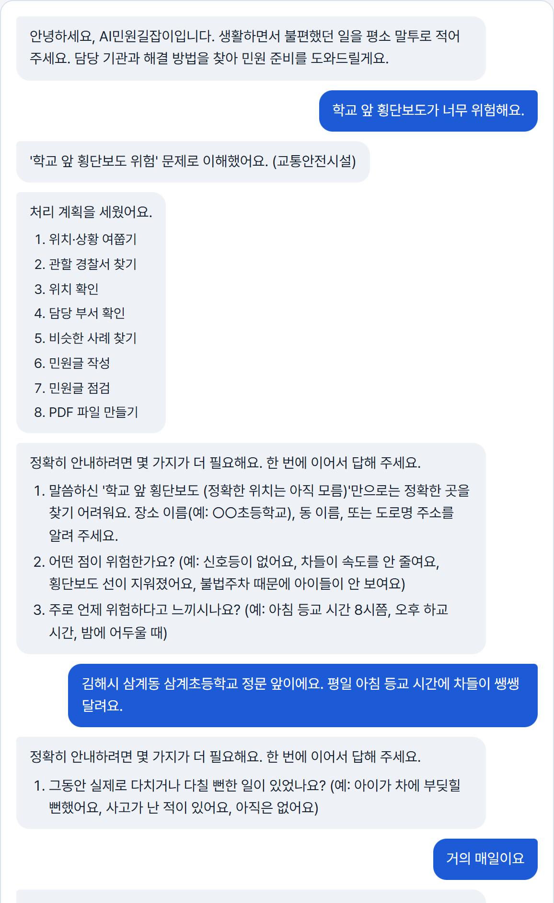

01
프로젝트 개요
개발 배경 · 목표- 1가로등 고장, 위험한 횡단보도 같은 생활불편을 겪어도 어느 기관·창구에 무엇을 준비해 내야 할지 몰라 민원을 포기하거나 잘못 낸다.
- 2행정 용어·절차가 낯선 시민, 한국어가 서툰 경남 거주 외국인 주민에게는 더 어렵다.
- 3AI Agent가 시민의 말·현장 사진을 이해하고, 모자란 정보는 묻고, 지도·지식베이스·공공데이터로 근거를 찾아, 담당 기관과 민원 초안을 스스로 검증해 건네는 것이 목표다.
- 48일 개발기간 동안 입력부터 민원 패키지(PDF)까지 처음부터 끝까지 동작하는 MVP(Level 3)를 완성했다. 민원 제출은 시민이 확인 후 직접 한다.
시민의 말을 민원으로 바꾸는 행정 길잡이
스스로 계획하고, 모자란 정보는 묻고, 검색으로 근거를 찾고,
결과를 검증한 뒤 건넨다
02
개발 세부 내용
시스템 구조 / 활용 데이터 · AI · 기술 / 3단계 개발 내용A시스템 구조도 (Agent Workflow ①~⑦)
시민 입력① 입력·안전 점검
🗣️
- 평소 말투·현장 사진
- 한·영·중·베트남어
- 개인정보 가림
- 112·119·109 안내
이해 · 계획② 입력 확인·문제 분석
③ 처리 계획
🧠
- 민원·민원 서비스·
다른 창구 구분 - 유형·긴급도·언어
- 할 일·Tool 계획
정보 · Tool④ 정보 판단·추가 질문
⑤ Tool 실행
🔎
- 부족한 정보 질문
- 카카오 지도·기관
- 지식베이스
- 공공데이터 2종
판단 · 검증⑥ 판단·작성·검증
⚖️
- 담당 기관·창구 판단
- 민원 초안·증빙
- 규칙 검사 + AI 검토
- 문제면 다시 작성
결과 전달⑦ 결과 전달·피드백
📦
- 민원 패키지·PDF
- 민원 서비스 안내
- 번역본 + 한국어 원문
- 수정 요청 반영
🔁 Feedback 검증 실패 → 다시 작성 · Tool 실패 → 재시도·대체 경로 · 수정 요청 → 그 부분만 다시 작성
B활용 데이터 / AI / 활용 기술
🗂️ 활용 데이터
- 카카오 로컬 API (위치·기관)
- 공공데이터 2종 (민원 사례·발급기)
- 지식베이스 (12유형·서비스 17종)
🤖 AI · Claude Opus 5.5
- 분석·계획·정보 판단
- 기관 판단·초안·AI 검토
- 사진 분석·번역·대화
🛠️ 활용 기술
- Claude Code CLI · JSON Schema
- LangGraph · FastAPI · React
- Pillow(사진 정보) · fpdf2(PDF)
C3단계 개발 내용
🧱
1단계. 기반 구축(1~3일차)
- 문제 정의 · Workflow 설계
- Agent 골격: 안전 점검·분석·계획·질문
- 카카오 위치·관할 기관·지식베이스
- 처음부터 끝까지(E2E) 민원 패키지 완성
⚙️
2단계. 판단 · 확장(4~5일차)
- Claude 판단 엔진 · 공공데이터 민원 사례
- 입력 확인 · 위기 109 · 다른 창구 안내
- 4개 언어 · 수정 요청 답변
- 현장 사진(GPS) · 민원 서비스 안내
✅
3단계. 검증 · 완성(6~8일차)
- 평가 세트로 측정 → 틀린 곳 보완
- 대표 테스트케이스 9건 재실행
- 제출물 · 회귀 점검
🆕 기존자산 없음. 모든 코드·지식베이스·화면·평가 세트를 대회 기간(9/29~10/6)에 이 저장소에서 새로 작성 (커밋 기록으로 확인)
03
구현 결과
주요 기능 / 실제 실행 화면 (2026-10-04)- 입력 확인·문제 분석·처리 계획
- 추가 질문·대화 (사진 확인)
- 위치·기관 검색 (Tool 3종)
- 담당 기관 + 민원 패키지 PDF
- 결과 검증·수정 (수정 요청)
🧪 대표 테스트케이스 9건 모두 통과
정상 입력부정확한 입력데이터 없음API 오류악의적 입력수정 요청민원 종류 변경처리 중단민원 서비스
🏆8일 개발기간 · Level 3 MVP
① 입력 → 문제 이해 → 처리 계획

⑤ 작업 기록: 실제 Tool 호출

⑦ 민원 패키지: 제출할 곳 · 사례

04
기대 효과
시민 · 외국인 주민 · 지자체를 위한 가치🙋
시민
- 포기하던 민원을 대화로 준비
- 기관·창구·증빙을 한 번에
- 서류 발급은 지금 되는 곳으로
“말하면, 길이 보입니다”
🌏
외국인 주민
- 내 언어로 묻고 안내받기
- 번역본 + 검증된 한국어 원문
- 다른 공식 창구도 안내
“내 언어로 묻고, 한국어로 제출”
🏛️
지자체 · 민원 담당
- 위치·상황이 정리된 민원
- 담당 기관 오지정 감소 기대
- 근거 없는 '필수' 서류 방지
“정리된 민원, 빠른 처리”
11/11담당 기관
132/132입력 확인
10/10민원 서비스
20/20수정 요청
9/9대표 테스트
위 수치: 평가 세트·대표 테스트케이스를 실제 Claude로 실행 (2026-10-04)
한계부서명은 지자체마다 달라 일반 표현으로 안내 · AI 판단은 틀릴 수 있어 검증 후 시민이 직접 제출 · 사용자 검증·시간 단축은 아직 측정 전
향후지자체 조직도 연동 · 시민·기관 담당자 검증 · 전국 확대